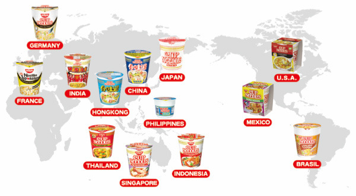
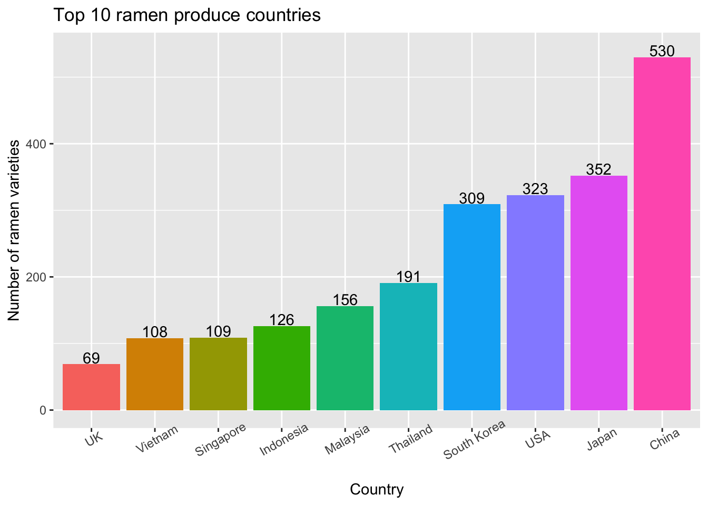

Rating by Countries

Background Introduction
There are 36 countries included in our Ramen dataset, with a total of 2580 ramen varieties.
Top Ramen Produce Countries
Can you imagine how popular ramen is in these countries?! 
The top four countries that produced the most ramens are China (n = 530), Japan (n = 352), USA (n = 323) and South Korea (n = 309), with over 300 varieties of ramen recorded! The count of ramen varieties produced by China far outweighs the ramen varieties in other countries.
| country | count |
|---|---|
| China | 530 |
| Japan | 352 |
| USA | 323 |
| South Korea | 309 |
Rating Distribution among Top Three Ramen Produce Countries
Now let’s take a closer look at the rating distribution among the top four ramen produce countries!
According to the graph, it appears that most ramens produced by China, South Korea, and USA have a peak of rating scores around 4 stars and a second but smaller peak at score 5. Among all four countries, Japan has relatively higher rating scores with more rating scores at score around 4 to 5 stars.
Top Average Rating Countries
What are the top countries that have the highest average rating scores on their ramens? Do you have any guess?

Here is the result!
Let’s first take a look at the top 10 countries with the highest average rating scores :) (NOTE: Check out the average rating score for each country by moving your mouse to each bar)
Does the result differ from your expectation? It appears that the top ten average rating countries have average rating scores between the range of 3.5 and 4.5 out of 5 stars. Brazil had the highest average rating score (4.35 out of 5) among all countries, followed by Sarawak (score 4.33 out of 5) and Cambodia (score 4.20 out of 5). These countries produced ramens with higher quality (better taste) despite that they were not the top ramen producers in quantity.
| country | avg_rating |
|---|---|
| Brazil | 4.35 |
| Sarawak | 4.33 |
| Cambodia | 4.20 |
Bottom Average Rating Countries
What about the bottom countries that have the lowest average rating scores on their ramens?
Check out the bottom 10 countries with the lowest average rating scores below! (NOTE: Check out the average rating score for each country by moving your mouse to each bar)
Nigeria had the lowest average rating score (1.50 out of 5) among all countries, followed by Canada (score 2.24 out of 5) and Netherlands (score 2.48 out of 5). The other countries had average rating scores approximate to 3 out of 5.
| country | avg_rating |
|---|---|
| Nigeria | 1.50 |
| Canada | 2.24 |
| Netherlands | 2.48 |